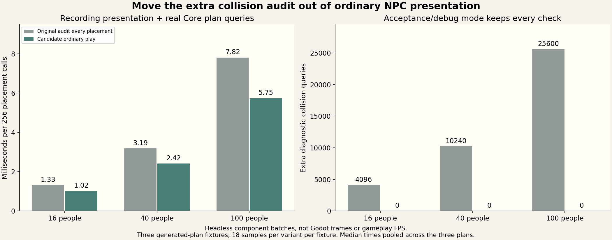

1 November 2026
Keeping checks where they belong
1 November 2026
A village should spend its time on people moving, working and talking. Sometimes a performance improvement comes from finding work that belongs in the workshop instead.
Each time the town placed its people for drawing, it also checked whether every awake, visible resident was standing legally. That extra check recorded mistakes for our acceptance tests. The walking and routing systems already made their own collision decisions; this second pass did not move anyone or prevent a step.
The proposal keeps that full audit in every self-test and makes it available as an explicit diagnostic mode. Ordinary play can leave out the extra pass. Conversations, visibility, facing, walking, work and the pictures people paint keep the same paths.

A useful reduction with a clear limit
The comparison runs the real presentation routine with a recording graphics interface and real generated-town collision queries. It checks groups of sixteen, forty and one hundred people across three town plans, alternating the original and proposed code.
The recorded placement batches took about twenty-two to twenty-nine percent less CPU time. A batch of 256 placements for one hundred people stopped making 25,600 extra diagnostic queries. Both versions allocated no temporary managed memory in those warm batches.
These are component measurements on a shared desktop server. They are not game frames, a new phone frame rate or a promise that the whole town is that much faster. The normal engine acceptance tests have now passed. These measurements still do not establish a whole-game frame-rate gain.
The tests still have their eyes open
The test fixture deliberately supplies illegal footing. Every self-test, explicit audit and comparison mode still detects it. A moving and sleeping resident trace also keeps the same presentation states as the original routine.
The aim is to keep the checks that protect the game, and stop asking ordinary play to run a test-only audit over and over.